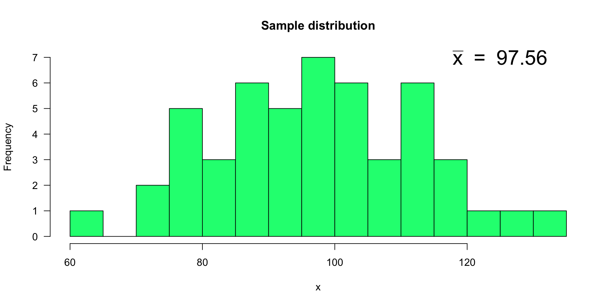
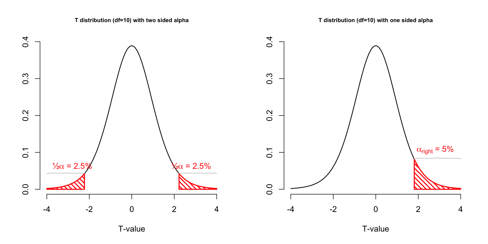

layout(matrix(c(2:6,1,1,7:8,1,1,9:13), 4, 4))
n <- 56 # Sample size
df <- n - 1 # Degrees of freedom
mu <- 100
sigma <- 15
IQ <- seq(mu-45, mu+45, 1)
par(mar=c(4,2,2,0))
plot(IQ, dnorm(IQ, mean = mu, sd = sigma), type='l', col="red", main = "Population Distribution")
n.samples <- 12
for(i in 1:n.samples) {
par(mar=c(2,2,2,0))
hist(rnorm(n, mu, sigma), main="Sample Distribution", cex.axis=.5, col="beige", cex.main = .75)
}7. T-distribution and t-tests
Sharon Kinkenberg & Johnny van Doorn
University of Amsterdam
2023-09-19
T-distribution
Gosset

In probability and statistics, Student’s t-distribution (or simply the t-distribution) is any member of a family of continuous probability distributions that arises when estimating the mean of a normally distributed population in situations where the sample size is small and population standard deviation is unknown.
In the English-language literature it takes its name from William Sealy Gosset’s 1908 paper in Biometrika under the pseudonym “Student”. Gosset worked at the Guinness Brewery in Dublin, Ireland, and was interested in the problems of small samples, for example the chemical properties of barley where sample sizes might be as low as 3.
Source: Wikipedia
Population distribution
Population distribution

A sample
Let’s take one sample from our normal populatiion and calculate the t-value.
[1] 100.97005 125.17443 87.68361 115.62755 90.40944 56.03480 126.91833
[8] 117.56323 94.83196 89.43322 121.98989 94.24758 106.97101 101.36105
[15] 98.07188 98.51507 104.69717 82.20628 78.80417 94.24427 129.50736
[22] 117.96377 104.02067 91.79327 134.61687 91.88108 101.33102 100.24210
[29] 106.09348 112.56414 108.93761 77.63284 88.17673 118.11035 89.55079
[36] 104.76861 97.61335 69.21079 84.55443 104.73619 109.39141 107.74050
[43] 112.38200 98.47436 112.83601 98.29976 111.80582 105.75345 98.21146
[50] 106.59683 106.76012 114.85950 102.86219 113.47482 101.43557 103.55233A sample

More samples
let’s take more samples.
Mean and SE for all samples
Sampling distribution
Of the mean
Sampling distribution
T-statistic
\[T_{n-1} = \frac{\bar{x}-\mu}{SE_x} = \frac{\bar{x}-\mu}{s_x / \sqrt{n}}\]
So the t-statistic represents the deviation of the sample mean \(\bar{x}\) from the population mean \(\mu\), considering the sample size, expressed as the degrees of freedom \(df = n - 1\)
t-value
\[T_{n-1} = \frac{\bar{x}-\mu}{SE_x} = \frac{\bar{x}-\mu}{s_x / \sqrt{n}}\]
Calculate t-values
\[T_{n-1} = \frac{\bar{x}-\mu}{SE_x} = \frac{\bar{x}-\mu}{s_x / \sqrt{n}}\]
t.values <- (mean.x.values - mu) / se.x.values
tail(cbind(mean.x.values, mu, se.x.values, t.values)) mean.x.values mu se.x.values t.values
[995,] 95.84344 100 2.249932 -1.8474152
[996,] 96.90759 100 1.626343 -1.9014469
[997,] 105.30089 100 2.111462 2.5105301
[998,] 97.16155 100 1.666629 -1.7031087
[999,] 99.72544 100 1.737595 -0.1580138
[1000,] 101.21715 100 2.040345 0.5965407Sampled t-values
What is the distribution of all these t-values?
Sampled t-values

T-distribution
So if the population is normaly distributed (assumption of normality) the t-distribution represents the deviation of sample means from the population mean (\(\mu\)), given a certain sample size (\(df = n - 1\)).
The t-distibution therefore is different for different sample sizes and converges to a standard normal distribution if sample size is large enough.
The t-distribution is defined by:
\[\textstyle\frac{\Gamma \left(\frac{\nu+1}{2} \right)} {\sqrt{\nu\pi}\,\Gamma \left(\frac{\nu}{2} \right)} \left(1+\frac{x^2}{\nu} \right)^{-\frac{\nu+1}{2}}\!\]
where \(\nu\) is the number of degrees of freedom and \(\Gamma\) is the gamma function.
Source: wikipedia
One or two sided
Two sided
- \(H_A: \bar{x} \neq \mu\)
One sided
- \(H_A: \bar{x} > \mu\)
- \(H_A: \bar{x} < \mu\)
Effect-size d
The effect-size is the standardized difference between the mean and the expected \(\mu\). In the t-test, effect-size can be expressed as \(d\) (Cohen’s d)). \[d = \frac{\bar{x}}{s} = \frac{t}{\sqrt{n}}\]
See Tukey (1969) and Section 3.7.4 of Field:
being so disinterested in our variables that we do not care about their units can hardly be desirable.
Effect-size r
Another option is to have the effect size expressed as \(r\) (similar to correlation coefficient). \[r = \sqrt{\frac{t^2}{t^2 + \text{df}}}\]
Effect-sizes
We can also calculate effect-sizes \(r\) for all our calculated t-values. Under the assumption of \(H_0\) the effect-size distribution looks like this.
mean.x.values mu se.x.values t.values r
[995,] 95.84344 100 2.249932 -1.8474152 0.24171854
[996,] 96.90759 100 1.626343 -1.9014469 0.24835789
[997,] 105.30089 100 2.111462 2.5105301 0.32064570
[998,] 97.16155 100 1.666629 -1.7031087 0.22382104
[999,] 99.72544 100 1.737595 -0.1580138 0.02130174
[1000,] 101.21715 100 2.040345 0.5965407 0.08017856Effect-size distribution
Cohen (1988)
- Small: \(0 \leq .1\)
- Medium: \(.1 \leq .3\)
- Large: \(.3 \leq .5\)
Power
- Strive for 80%
- Based on know effect size
- Calculate number of subjects needed
- Use G*Power, JASP, or SPSS to calculate

Alpha Power
One-sample t-test
IQ next to you

https://maglit.me/nomaphochs
Models
\[\text{outcome} = \text{model} + \text{error}\]
Compare sample mean
We use the one-sample t-test to compare the sample mean \(\bar{x}\) to the population mean \(\mu\).
Let’s take a different sample and calculate the mean of this sample.
mu <- 120
n <- length(IQ.next.to.you)
x <- IQ.next.to.you
mean_x <- mean(x, na.rm = TRUE)
sd_x <- sd(x, na.rm = TRUE)
cbind(n, mean_x, sd_x) n mean_x sd_x
[1,] 53 112.7358 11.94885Does this mean differ significantly from the population mean \(\mu = 120\)?
Hypothesis
Null hypothesis
- \(H_0: \bar{x} = \mu\)
Alternative hypothesis
- \(H_A: \bar{x} \neq \mu\)
- \(H_A: \bar{x} > \mu\)
- \(H_A: \bar{x} < \mu\)
Assumptions
- Normal samples distribution
- Random samples
- Measurement level
- Interval
- Ratio
T-statistic
\[T_{n-1} = \frac{\bar{x}-\mu}{SE_x} = \frac{\bar{x}-\mu}{s_x / \sqrt{n}} = \frac{112.74 - 120 }{11.95 / \sqrt{53}}\]
So the t-statistic represents the deviation of the sample mean \(\bar{x}\) from the population mean \(\mu\), considering the sample size.
Type I error
To determine if this t-value significantly differs from the population mean we have to specify a type I error that we are willing to make.
- Type I error / \(\alpha\) = .05
P-value one sided
Finally we have to calculate our p-value for which we need the degrees of freedom \(df = n - 1\) to determine the shape of the t-distribution.
P-value one sided
P-value two sided
Effect-size
\[r = \sqrt{\frac{t^2}{t^2 + \text{df}}}\]
Paired-samples t-test
Paired 2 samples
Paired-samples t-test
In the Paired samples t-test the deviation (\(D\)) for each pair is calculated and the mean of these deviations (\(\bar{D}\)) is tested against the null hypothesis where \(\mu = 0\).
\[t_{n-1} = \frac{\bar{D} - \mu}{ {SE}_D }\] Where \(n\) (the number of cases) minus \(1\), are the degrees of freedom \(df = n - 1\) and \(SE_D\) is the standard error of \(D\), defined as \(s_D/\sqrt{n}\).
Hypothesis
\[\LARGE{ \begin{aligned} H_0 &: \bar{D} = \mu_D \\ H_A &: \bar{D} \neq \mu_D \\ H_A &: \bar{D} > \mu_D \\ H_A &: \bar{D} < \mu_D \\ \end{aligned}}\]
Data structure
| index | k1 | k2 |
|---|---|---|
| 1 | x | x |
| 2 | x | x |
| 3 | x | x |
| 4 | x | x |
Where \(k\) is the level of the categorical predictor variable and \(x\) is the value of the outcome/dependent variable.
Data example
We are going to use the IQ estimates we collected. You had to guess your neighbor’s IQ and your own IQ.
Let’s take a look at the data.
IQ estimates
Calculate \(D\)
Calculate \(\bar{D}\)
diffScores <- na.omit(diffScores) # get rid of all missing values
diffMean <- mean(diffScores)
diffMean[1] 0.8679245And we also need n.
Calculate t-value
\[t_{n-1} = \frac{\bar{D} - \mu}{ {SE}_D }\]
Test for significance
Two tailed
Test for significance
Effect-size
\[r = \sqrt{\frac{t^2}{t^2 + \text{df}}}\]
Confidence interval (bonus)
To display correct confidence intervals in SPSS we need to correct the original scores for whithin subject variation.
** SPSS SYNTAX
COMPUTE personal_mean = MEAN(nextIQ, ownIQ).
EXECUTE.
AGGREGATE
/OUTFILE=* MODE=ADDVARIABLES
/BREAK=
/total_mean = MEAN(personal_mean).
COMPUTE adjustment = total_mean - personal_mean.
EXECUTE.
COMPUTE nextIQ.adj = nextIQ + adjustment.
COMPUTE ownIQ.adj = ownIQ + adjustment.
EXECUTE.
Independent-samples t-test
Compare 2 independent samples
Independent-samples t-test
In the independent-samples t-test the mean of both independent samples is calculated and the difference of these \((\bar{X}_1 - \bar{X}_2)\) means is tested against the null hypothesis where \(\mu = 0\).
\[t_{n_1 + n_2 -2} = \frac{(\bar{X}_1 - \bar{X}_2) - \mu}{{SE}_p}\] Where \(n_1\) and \(n_2\) are the number of cases in each group and \(SE_p\) is the pooled standard error.
Hypothesis
\[\begin{aligned} H_0 &: t = 0 = \mu_t \\ H_A &: t \neq 0 \\ H_A &: t > 0 \\ H_A &: t < 0 \\ \end{aligned}\]Data structure
| index | k | outcome |
|---|---|---|
| 1 | 1 | x |
| 2 | 1 | x |
| 3 | 2 | x |
| 4 | 2 | x |
Where \(k\) is the level of the categorical predictor variable and \(x\) is the value of the outcome/dependent variable.
Additional assumption
Specific for independent sample \(t\)-test.
- Equality of variance
- \(H_0\) : Variance \(=\) equal (\(p\) > .05)
- \(H_A\) : Variance \(\neq\) equal (\(p\) < .05)
Example
We are going to use the IQ estimates we collected last week again. You had to guess the IQ of the one sitting next to you and your own IQ. But we are going to add class position to the data set. We did not register this so we are going to simulate some positions.
The data
Calculate means
ownIQfront <- subset(data, classPosition == "front", select = ownIQ)$ownIQ
ownIQback <- subset(data, classPosition == "back", select = ownIQ)$ownIQ
ownIQfront.mean <- mean(ownIQfront, na.rm = TRUE)
ownIQback.mean <- mean(ownIQback, na.rm = TRUE)
rbind(ownIQfront.mean, ownIQback.mean) [,1]
ownIQfront.mean 110.25
ownIQback.mean 113.68Calculate variance
ownIQfront.var <- var(ownIQfront, na.rm = TRUE)
ownIQback.var <- var(ownIQback, na.rm = TRUE)
print(rbind(ownIQfront.var, ownIQback.var)) [,1]
ownIQfront.var 294.1204
ownIQback.var 121.5600ownIQfront.n <- length(ownIQfront) - 1
ownIQback.n <- length(ownIQback) - 1
print(rbind(ownIQfront.n, ownIQback.n)) [,1]
ownIQfront.n 27
ownIQback.n 24Calculate t-value
\[t_{n_1 + n_2 -2} = \frac{(\bar{X}_1 - \bar{X}_2) - \mu}{{SE}_p}\]
Where \({SE}_p\) is the pooled standard error.
\[{SE}_p = \sqrt{\frac{S^2_p}{n_1}+\frac{S^2_p}{n_2}}\]
And \(S^2_p\) is the pooled variance.
\[S^2_p = \frac{(n_1-1)s^2_1+(n_2-1)s^2_2}{n_1+n_2-2}\]
Where \(s^2\) is the variance and \(n\) the sample size.
Calculate pooled variance
\[S^2_p = \frac{(n_1-1)s^2_1+(n_2-1)s^2_2}{n_1+n_2-2}\]
Calculate pooled SE
\[ {SE}_p = \sqrt{\frac{S^2_p}{n_1}+\frac{S^2_p}{n_2}} \]
Calculate t-value
\[t_{n_1 + n_2 -2} = \frac{(\bar{X}_1 - \bar{X}_2) - \mu}{{SE}_p}\]
Test for significance
Two tailed
Test for significance
Effect-size
\[r = \sqrt{\frac{t^2}{t^2 + \text{df}}}\]
But what about equal variances?!
There exist different hypothesis tests for this - the most used is Levene’s test: ::: {.cell}
if(!"car" %in% installed.packages()) { install.packages("car") }
library("car")
leveneTest(y = ownIQ, group = classPosition)Levene's Test for Homogeneity of Variance (center = median)
Df F value Pr(>F)
group 1 1.2519 0.2684
51 :::
The difference only matters when \(n_A \neq n_B\)!
meanA <- 50
meanB <- 55
sdA <- 5
sdB <- 10
nA <- 20
nB <- 20
seA <- sdA / sqrt(nA)
seB <- sdB / sqrt(nB)
tStatWelch <- (meanA - meanB) / sqrt((sdA^2 / nA) + (sdB^2 / nB))
pooledS <- sqrt(((nA - 1) * sdA^2 + (nA - 1) * sdB^2) / (nA + nB - 2))
tStatStudent <- (meanA - meanB) / (pooledS * sqrt(1/nA + 1/nA))
tStatStudent[1] -2[1] -2End
Contact


Scientific & Statistical Reasoning